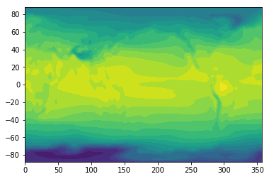
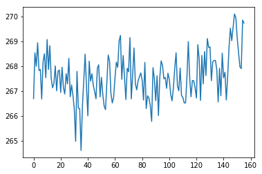
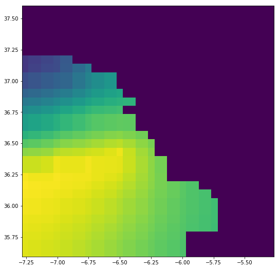

Exercises¶
Ideas¶
- Use PAVICS WPS to to take a yearly average of a netcdf file
- Use the Hummingbird WPS suite : hint use the ‘cdo_operation’ process to run ‘yearmean’
- Use this OpenDap link to a CanESM monthly tas .nc file : ‘http://boreas.ouranos.ca:8083/thredds/dodsC/birdhouse/CCCMA/CanESM2/historical/mon/atmos/r1i1p1/tas/tas_Amon_CanESM2_historical_r1i1p1_185001-200512.nc’
- PAVICS wps url : ‘https://boreas.ouranos.ca/twitcher/ows/proxy/hummingbord/wps’
- the NCDUMP example can help structure your code!
- Access point information from a layer (lat, lon of your choice for
the layer of your choice). There are two ways to do this, one is to
use a Web Coverage Service to access the gridded data, the other is
to use the GetFeatureInfo operation of Web Mapping Service (see
http://cite.opengeospatial.org/pub/cite/files/edu/wms/text/operations.html#getfeatureinfo).
The challenge with GeoMet’s WCS services is that it tends to be
fragile (not all layers seem to work all the time). For WMS, the
service appears robust, but the challenge is rather to map the
geographic coordinates of the point of interest (lat, lon) into
native geodesic coordinates (x,y).
- Possible datasources:
- ECCC GeoMet WCS : ‘http://geo.weather.gc.ca/geomet/?lang=en&service=WCS’
- ECCC GeoMet WMS : ‘http://geo.weather.gc.ca/geomet/?lang=en&service=WMS’
- Possible datasources:
WPS Exercise : solution¶
Run PAVICS ‘getpoint’ wps to extract data from a single grid cell
In [160]:
from owslib.wps import WebProcessingService
import requests
from lxml import etree
from netCDF4 import Dataset
import matplotlib.pyplot as plt
def parseStatus(execute):
o = requests.get(execute.statusLocation)
t = etree.fromstring(o.content)
ref = t.getchildren()[-1].getchildren()[-1].getchildren()[-1].get('{http://www.w3.org/1999/xlink}href')
return ref
In [161]:
url = 'https://boreas.ouranos.ca/twitcher/ows/proxy/hummingbird/wps'
wps = WebProcessingService(url=url)
In [162]:
# Get metadata about the process
proc_name = 'cdo_operation'
process = wps.describeprocess(proc_name) # get process info
for i in process.dataInputs:
print('inputs :', i.identifier, ' : ', i.abstract)
for i in process.processOutputs:
print('outputs :', i.identifier, ' : ', i.abstract)
inputs : dataset : You may provide a URL or upload a NetCDF file.
inputs : dataset_opendap : Or provide a remote OpenDAP data URL, for example: http://www.esrl.noaa.gov/psd/thredds/dodsC/Datasets/ncep.reanalysis2.dailyavgs/surface/mslp.2016.nc
inputs : operator : Choose a CDO Operator. See the CDO documentation to lookup a description of the operators.
outputs : output : NetCDF Output generated by CDO.
In [163]:
nc_url = 'http://boreas.ouranos.ca:8083/thredds/dodsC/birdhouse/CCCMA/CanESM2/historical/mon/atmos/r1i1p1/tas/tas_Amon_CanESM2_historical_r1i1p1_185001-200512.nc'
print(nc_url)
http://boreas.ouranos.ca:8083/thredds/dodsC/birdhouse/CCCMA/CanESM2/historical/mon/atmos/r1i1p1/tas/tas_Amon_CanESM2_historical_r1i1p1_185001-200512.nc
In [164]:
myinputs = []
myinputs.append(('dataset_opendap',nc_url))
myinputs.append(('operator','yearmean'))
print(myinputs)
[('dataset_opendap', 'http://boreas.ouranos.ca:8083/thredds/dodsC/birdhouse/CCCMA/CanESM2/historical/mon/atmos/r1i1p1/tas/tas_Amon_CanESM2_historical_r1i1p1_185001-200512.nc'), ('operator', 'yearmean')]
In [165]:
print(proc_name)
execute = wps.execute(proc_name, myinputs)
cdo_operation
In [166]:
ref = parseStatus(execute)
print(ref)
https://pavics.ouranos.ca:443/wpsoutputs/hummingbird/749ec268-bba3-11e8-8b91-0242ac12000d/cdo_yearmean_VcLf76.nc
In [167]:
r= requests.get(ref)
outfile = './output/' +ref.split('/')[-1]
print(outfile)
with open(outfile, 'wb') as f:
f.write(r.content)
./output/cdo_yearmean_VcLf76.nc
In [168]:
nc1 = Dataset(outfile)
tas = nc1['tas'][:]
lon = nc1.variables['lon'][:]
lat = nc1.variables['lat'][:]
plt.contourf(lon,lat,tasmax.mean(axis=0),20)
plt.show()

In [169]:
plt.plot(tas[:,10,10])
plt.show()

WCS Example¶
In [170]:
from owslib.wcs import WebCoverageService
geomet_wcs_url = 'http://geo.weather.gc.ca/geomet/?lang=en&service=WCS'
pavics_wcs_url = 'http://boreas.ouranos.ca:8087/geoserver/wcs'
In [179]:
crs='epsg:4326'
w = 1
h = 1
wcs = WebCoverageService('http://geo.weather.gc.ca/geomet?SERVICE=WCS&VERSION=1.0.0')
c = wcs.getCoverage('RDPA.24F_PR', crs=crs, format='image/tiff', bbox=(-145, 45, -145, 45), width=w, height=h)
In [180]:
fn = 'rdpa.24f_pr.tiff'
with open(fn, 'wb') as f:
f.write(c.read())
data = plt.imread(fn)
In [183]:
print(data)
[[[ 0 0 0 255]]]
WMS Example¶
Here the challenge is to make the correspondance between geographic coordinates and the layer’s geodesic coordinates.
In [185]:
from owslib.wms import WebMapService
geomet_wms_url ='http://geo.weather.gc.ca/geomet/?lang=en&service=WMS'
In [188]:
wms = WebMapService(geomet_wms_url, version='1.3.0')
In [192]:
layer = 'RDPA.24F_PR'
c = wms.contents[layer]
In [206]:
resp = wms.getfeatureinfo(layers=[layer,], srs=crs, bbox=(-146, 44, -144, 46), format='image/png', query_layers=[layer,], info_format='application/vnd.ogc.gml', size=(10,10), xy=(5,5))
In [209]:
print(resp.read().decode())
<?xml version="1.0" encoding="UTF-8"?>
<msGMLOutput
xmlns:gml="http://www.opengis.net/gml"
xmlns:xlink="http://www.w3.org/1999/xlink"
xmlns:xsi="http://www.w3.org/2001/XMLSchema-instance">
<RDPA.24F_PR_layer>
<gml:name>RDPA.24F - Quantity of precipitation</gml:name>
<RDPA.24F_PR_feature>
<gml:boundedBy>
<gml:Box srsName="EPSG:4326">
<gml:coordinates>-149.641318,45.444035 -149.641318,45.444035</gml:coordinates>
</gml:Box>
</gml:boundedBy>
<x>-149.64132</x>
<y>45.444035</y>
<value_0>0.51100004</value_0>
<value_1>0</value_1>
<value_list>0.51100004,0</value_list>
<class>0.1 - 2.0</class>
<red>-1</red>
<green>-1</green>
<blue>-1</blue>
</RDPA.24F_PR_feature>
<RDPA.24F_PR_feature>
<gml:boundedBy>
<gml:Box srsName="EPSG:4326">
<gml:coordinates>-149.549319,45.495530 -149.549319,45.495530</gml:coordinates>
</gml:Box>
</gml:boundedBy>
<x>-149.54932</x>
<y>45.49553</y>
<value_0>0.32050002</value_0>
<value_1>0</value_1>
<value_list>0.32050002,0</value_list>
<class>0.1 - 2.0</class>
<red>-1</red>
<green>-1</green>
<blue>-1</blue>
</RDPA.24F_PR_feature>
<RDPA.24F_PR_feature>
<gml:boundedBy>
<gml:Box srsName="EPSG:4326">
<gml:coordinates>-149.457084,45.546940 -149.457084,45.546940</gml:coordinates>
</gml:Box>
</gml:boundedBy>
<x>-149.45708</x>
<y>45.54694</y>
<value_0>0.24400002</value_0>
<value_1>0</value_1>
<value_list>0.24400002,0</value_list>
<class>0.1 - 2.0</class>
<red>-1</red>
<green>-1</green>
<blue>-1</blue>
</RDPA.24F_PR_feature>
<RDPA.24F_PR_feature>
<gml:boundedBy>
<gml:Box srsName="EPSG:4326">
<gml:coordinates>-149.364613,45.598265 -149.364613,45.598265</gml:coordinates>
</gml:Box>
</gml:boundedBy>
<x>-149.36461</x>
<y>45.598265</y>
<value_0>0.23650001</value_0>
<value_1>0</value_1>
<value_list>0.23650001,0</value_list>
<class>0.1 - 2.0</class>
<red>-1</red>
<green>-1</green>
<blue>-1</blue>
</RDPA.24F_PR_feature>
<RDPA.24F_PR_feature>
<gml:boundedBy>
<gml:Box srsName="EPSG:4326">
<gml:coordinates>-149.271905,45.649504 -149.271905,45.649504</gml:coordinates>
</gml:Box>
</gml:boundedBy>
<x>-149.2719</x>
<y>45.649504</y>
<value_0>0.29000002</value_0>
<value_1>0</value_1>
<value_list>0.29000002,0</value_list>
<class>0.1 - 2.0</class>
<red>-1</red>
<green>-1</green>
<blue>-1</blue>
</RDPA.24F_PR_feature>
<RDPA.24F_PR_feature>
<gml:boundedBy>
<gml:Box srsName="EPSG:4326">
<gml:coordinates>-149.178959,45.700656 -149.178959,45.700656</gml:coordinates>
</gml:Box>
</gml:boundedBy>
<x>-149.17896</x>
<y>45.700656</y>
<value_0>0.38150001</value_0>
<value_1>0</value_1>
<value_list>0.38150001,0</value_list>
<class>0.1 - 2.0</class>
<red>-1</red>
<green>-1</green>
<blue>-1</blue>
</RDPA.24F_PR_feature>
<RDPA.24F_PR_feature>
<gml:boundedBy>
<gml:Box srsName="EPSG:4326">
<gml:coordinates>-149.085776,45.751721 -149.085776,45.751721</gml:coordinates>
</gml:Box>
</gml:boundedBy>
<x>-149.08578</x>
<y>45.751721</y>
<value_0>0.49600002</value_0>
<value_1>0</value_1>
<value_list>0.49600002,0</value_list>
<class>0.1 - 2.0</class>
<red>-1</red>
<green>-1</green>
<blue>-1</blue>
</RDPA.24F_PR_feature>
<RDPA.24F_PR_feature>
<gml:boundedBy>
<gml:Box srsName="EPSG:4326">
<gml:coordinates>-148.992354,45.802699 -148.992354,45.802699</gml:coordinates>
</gml:Box>
</gml:boundedBy>
<x>-148.99235</x>
<y>45.802699</y>
<value_0>0.59500003</value_0>
<value_1>0</value_1>
<value_list>0.59500003,0</value_list>
<class>0.1 - 2.0</class>
<red>-1</red>
<green>-1</green>
<blue>-1</blue>
</RDPA.24F_PR_feature>
<RDPA.24F_PR_feature>
<gml:boundedBy>
<gml:Box srsName="EPSG:4326">
<gml:coordinates>-148.898694,45.853588 -148.898694,45.853588</gml:coordinates>
</gml:Box>
</gml:boundedBy>
<x>-148.89869</x>
<y>45.853588</y>
<value_0>0.65600002</value_0>
<value_1>0</value_1>
<value_list>0.65600002,0</value_list>
<class>0.1 - 2.0</class>
<red>-1</red>
<green>-1</green>
<blue>-1</blue>
</RDPA.24F_PR_feature>
<RDPA.24F_PR_feature>
<gml:boundedBy>
<gml:Box srsName="EPSG:4326">
<gml:coordinates>-148.804795,45.904389 -148.804795,45.904389</gml:coordinates>
</gml:Box>
</gml:boundedBy>
<x>-148.8048</x>
<y>45.904389</y>
<value_0>0.64100003</value_0>
<value_1>0</value_1>
<value_list>0.64100003,0</value_list>
<class>0.1 - 2.0</class>
<red>-1</red>
<green>-1</green>
<blue>-1</blue>
</RDPA.24F_PR_feature>
<RDPA.24F_PR_feature>
<gml:boundedBy>
<gml:Box srsName="EPSG:4326">
<gml:coordinates>-148.710657,45.955101 -148.710657,45.955101</gml:coordinates>
</gml:Box>
</gml:boundedBy>
<x>-148.71066</x>
<y>45.955101</y>
<value_0>0.60250002</value_0>
<value_1>0</value_1>
<value_list>0.60250002,0</value_list>
<class>0.1 - 2.0</class>
<red>-1</red>
<green>-1</green>
<blue>-1</blue>
</RDPA.24F_PR_feature>
<RDPA.24F_PR_feature>
<gml:boundedBy>
<gml:Box srsName="EPSG:4326">
<gml:coordinates>-148.616279,46.005724 -148.616279,46.005724</gml:coordinates>
</gml:Box>
</gml:boundedBy>
<x>-148.61628</x>
<y>46.005724</y>
<value_0>0.72500002</value_0>
<value_1>0</value_1>
<value_list>0.72500002,0</value_list>
<class>0.1 - 2.0</class>
<red>-1</red>
<green>-1</green>
<blue>-1</blue>
</RDPA.24F_PR_feature>
<RDPA.24F_PR_feature>
<gml:boundedBy>
<gml:Box srsName="EPSG:4326">
<gml:coordinates>-148.521660,46.056255 -148.521660,46.056255</gml:coordinates>
</gml:Box>
</gml:boundedBy>
<x>-148.52166</x>
<y>46.056255</y>
<value_0>1.0225</value_0>
<value_1>0</value_1>
<value_list>1.0225,0</value_list>
<class>0.1 - 2.0</class>
<red>-1</red>
<green>-1</green>
<blue>-1</blue>
</RDPA.24F_PR_feature>
<RDPA.24F_PR_feature>
<gml:boundedBy>
<gml:Box srsName="EPSG:4326">
<gml:coordinates>-148.426801,46.106697 -148.426801,46.106697</gml:coordinates>
</gml:Box>
</gml:boundedBy>
<x>-148.4268</x>
<y>46.106697</y>
<value_0>1.3505001</value_0>
<value_1>0</value_1>
<value_list>1.3505001,0</value_list>
<class>0.1 - 2.0</class>
<red>-1</red>
<green>-1</green>
<blue>-1</blue>
</RDPA.24F_PR_feature>
<RDPA.24F_PR_feature>
<gml:boundedBy>
<gml:Box srsName="EPSG:4326">
<gml:coordinates>-148.331701,46.157047 -148.331701,46.157047</gml:coordinates>
</gml:Box>
</gml:boundedBy>
<x>-148.3317</x>
<y>46.157047</y>
<value_0>1.6785001</value_0>
<value_1>0</value_1>
<value_list>1.6785001,0</value_list>
<class>0.1 - 2.0</class>
<red>-1</red>
<green>-1</green>
<blue>-1</blue>
</RDPA.24F_PR_feature>
<RDPA.24F_PR_feature>
<gml:boundedBy>
<gml:Box srsName="EPSG:4326">
<gml:coordinates>-148.236360,46.207305 -148.236360,46.207305</gml:coordinates>
</gml:Box>
</gml:boundedBy>
<x>-148.23636</x>
<y>46.207305</y>
<value_0>1.9455001</value_0>
<value_1>0</value_1>
<value_list>1.9455001,0</value_list>
<class>0.1 - 2.0</class>
<red>-1</red>
<green>-1</green>
<blue>-1</blue>
</RDPA.24F_PR_feature>
<RDPA.24F_PR_feature>
<gml:boundedBy>
<gml:Box srsName="EPSG:4326">
<gml:coordinates>-148.140777,46.257470 -148.140777,46.257470</gml:coordinates>
</gml:Box>
</gml:boundedBy>
<x>-148.14078</x>
<y>46.25747</y>
<value_0>2.0525</value_0>
<value_1>0</value_1>
<value_list>2.0525,0</value_list>
<class>2.0 - 5.0</class>
<red>-1</red>
<green>-1</green>
<blue>-1</blue>
</RDPA.24F_PR_feature>
<RDPA.24F_PR_feature>
<gml:boundedBy>
<gml:Box srsName="EPSG:4326">
<gml:coordinates>-148.044951,46.307543 -148.044951,46.307543</gml:coordinates>
</gml:Box>
</gml:boundedBy>
<x>-148.04495</x>
<y>46.307543</y>
<value_0>1.9225001</value_0>
<value_1>0</value_1>
<value_list>1.9225001,0</value_list>
<class>0.1 - 2.0</class>
<red>-1</red>
<green>-1</green>
<blue>-1</blue>
</RDPA.24F_PR_feature>
<RDPA.24F_PR_feature>
<gml:boundedBy>
<gml:Box srsName="EPSG:4326">
<gml:coordinates>-147.948884,46.357522 -147.948884,46.357522</gml:coordinates>
</gml:Box>
</gml:boundedBy>
<x>-147.94888</x>
<y>46.357522</y>
<value_0>1.5870001</value_0>
<value_1>0</value_1>
<value_list>1.5870001,0</value_list>
<class>0.1 - 2.0</class>
<red>-1</red>
<green>-1</green>
<blue>-1</blue>
</RDPA.24F_PR_feature>
<RDPA.24F_PR_feature>
<gml:boundedBy>
<gml:Box srsName="EPSG:4326">
<gml:coordinates>-147.852573,46.407408 -147.852573,46.407408</gml:coordinates>
</gml:Box>
</gml:boundedBy>
<x>-147.85257</x>
<y>46.407408</y>
<value_0>1.1595</value_0>
<value_1>0</value_1>
<value_list>1.1595,0</value_list>
<class>0.1 - 2.0</class>
<red>-1</red>
<green>-1</green>
<blue>-1</blue>
</RDPA.24F_PR_feature>
</RDPA.24F_PR_layer>
</msGMLOutput>
In [199]:
resp.read()
Out[199]:
b'<?xml version=\'1.0\' encoding="UTF-8" standalone="no" ?>\n<ServiceExceptionReport version="1.3.0" xmlns="http://www.opengis.net/ogc" xmlns:xsi="http://www.w3.org/2001/XMLSchema-instance" xsi:schemaLocation="http://www.opengis.net/ogc http://schemas.opengis.net/wms/1.3.0/exceptions_1_3_0.xsd">\n<ServiceException code="LayerNotDefined">\nmsWMSLoadGetMapParams(): WMS server error. Invalid layer(s) given in the LAYERS parameter. A layer might be disabled for this request. Check wms/ows_enable_request settings.\n</ServiceException>\n</ServiceExceptionReport>\n'
In [ ]:
In [ ]:
In [3]:
layer = 'Synthese2015:TempAnnObs'
obj = wcs.contents[layer]
In [123]:
resp = wcs.getCoverage(layer, bbox=obj.boundingBoxWGS84, crs=obj.supportedCRS[0], width=79, height=61, format='GeoTiff')
In [124]:
resp.read()
Out[124]:
b'<?xml version="1.0" encoding="UTF-8"?><ServiceExceptionReport version="1.2.0" > <ServiceException>\n java.lang.NullPointerException\n</ServiceException></ServiceExceptionReport>'
WFS exercise¶
I still can’t find a way to extract the XML into a meaningful object…
In [133]:
from owslib.wfs import WebFeatureService
pavics_wfs_url = 'http://boreas.ouranos.ca:8087/geoserver/wfs'
wfs = WebFeatureService(pavics_wfs_url, version='1.1.0')
In [134]:
obj = wfs.contents['scratchTJS:canada_admin_boundaries']
In [190]:
feat = wfs.getfeature(obj.id)
In [150]:
from osgeo import ogr
In [194]:
driver = ogr.GetDriverByName('WFS')
source = driver.Open(txt)
In [195]:
source
In [184]:
source
In [188]:
txt[:1900]
Out[188]:
'<?xml version="1.0" encoding="UTF-8"?><wfs:FeatureCollection xmlns:xs="http://www.w3.org/2001/XMLSchema" xmlns:TravisTest="http://boreas.ouranos.ca:8087/geoserver/TravisTest" xmlns:wfs="http://www.opengis.net/wfs" xmlns:gml="http://www.opengis.net/gml" xmlns:ogc="http://www.opengis.net/ogc" xmlns:ows="http://www.opengis.net/ows" xmlns:xlink="http://www.w3.org/1999/xlink" xmlns:scratchTJS="http://boreas.ouranos.ca:8087/scratchtjs" xmlns:xsi="http://www.w3.org/2001/XMLSchema-instance" numberOfFeatures="13" timeStamp="2018-09-18T17:22:25.259Z" xsi:schemaLocation="http://boreas.ouranos.ca:8087/scratchtjs http://boreas.ouranos.ca:8087/geoserver/wfs?service=WFS&version=1.1.0&request=DescribeFeatureType&typeName=scratchTJS%3Acanada_admin_boundaries http://www.opengis.net/wfs http://boreas.ouranos.ca:8087/geoserver/schemas/wfs/1.1.0/wfs.xsd"><gml:boundedBy><gml:Envelope srsDimension="2" srsName="GCS_WGS_1984"><gml:lowerCorner>-141.01807315799994 41.681435425000075</gml:lowerCorner><gml:upperCorner>-52.61940850399992 83.13550252400006</gml:upperCorner></gml:Envelope></gml:boundedBy><gml:featureMembers><scratchTJS:canada_admin_boundaries gml:id="canada_admin_boundaries.1"><gml:boundedBy><gml:Envelope srsName="GCS_WGS_1984" srsDimension="2"><gml:lowerCorner>-139.0522 48.3089</gml:lowerCorner><gml:upperCorner>-114.0542 60.0001</gml:upperCorner></gml:Envelope></gml:boundedBy><scratchTJS:the_geom><gml:MultiSurface srsName="GCS_WGS_1984" srsDimension="2"><gml:surfaceMember><gml:Polygon><gml:exterior><gml:LinearRing><gml:posList>-123.5398 48.3173 -123.5397 48.3172 -123.5393 48.3172 -123.5388 48.3171 -123.538 48.3173 -123.5378 48.3174 -123.5374 48.3174 -123.5373 48.3172 -123.5374 48.3167 -123.5386 48.3166 -123.5386 48.3165 -123.5382 48.3165 -123.5381 48.3164 -123.5386 48.3162 -123.5389 48.3159 -123.5401 48.3159 -123.5405 48.3158 -123.5407 48.3156 -123.5406 48.3152 -123.540'
In [ ]:
wcs = WebCoverageService(geomet_wcs_url, version='1.0.0')
In [55]:
layer_ids = ['RDPS.ETA_PR',] # 'REPS.DIAG.3_PRMM.ERMEAN'
lid = layer_ids[0]
meta = wcs.contents[lid]
meta.title
Out[55]:
'RDPS.ETA - Precipitation accumulation'
In [56]:
In [72]:
desc = {}
for key, val in wcs.contents.items():
if 'PR' in key:
if val.supportedFormats != []:
desc[key] = val
if len(desc) > 40:
break
In [73]:
desc.keys()
Out[73]:
dict_keys(['HRDPA.6F_PR', 'HRDPA.6P_PR', 'HRDPA.24F_PR', 'HRDPA.24P_PR', 'HRDPS.CONTINENTAL.PRES_ES.50', 'HRDPS.CONTINENTAL.PRES_ES.100', 'HRDPS.CONTINENTAL.PRES_ES.225', 'HRDPS.CONTINENTAL.PRES_ES.250', 'HRDPS.CONTINENTAL.PRES_ES.300', 'HRDPS.CONTINENTAL.PRES_ES.350', 'HRDPS.CONTINENTAL.PRES_ES.450', 'HRDPS.CONTINENTAL.PRES_ES.500', 'HRDPS.CONTINENTAL.PRES_ES.600', 'HRDPS.CONTINENTAL.PRES_ES.700', 'HRDPS.CONTINENTAL.PRES_ES.750', 'HRDPS.CONTINENTAL.PRES_ES.800', 'HRDPS.CONTINENTAL.PRES_ES.900', 'HRDPS.CONTINENTAL.PRES_ES.970', 'HRDPS.CONTINENTAL.PRES_ES.985', 'HRDPS.CONTINENTAL.PRES_ES.1000', 'HRDPS.CONTINENTAL.PRES_ES.1015', 'HRDPS.CONTINENTAL.PRES_GZ.100', 'HRDPS.CONTINENTAL.PRES_GZ.200', 'HRDPS.CONTINENTAL.PRES_GZ.250', 'HRDPS.CONTINENTAL.PRES_GZ.700', 'HRDPS.CONTINENTAL.PRES_GZ.925', 'HRDPS.CONTINENTAL.PRES_GZ.1000', 'HRDPS.CONTINENTAL.PRES_HR.50', 'HRDPS.CONTINENTAL.PRES_HR.150', 'HRDPS.CONTINENTAL.PRES_HR.225', 'HRDPS.CONTINENTAL.PRES_HR.250', 'HRDPS.CONTINENTAL.PRES_HR.300', 'HRDPS.CONTINENTAL.PRES_HR.400', 'HRDPS.CONTINENTAL.PRES_HR.500', 'HRDPS.CONTINENTAL.PRES_HR.550', 'HRDPS.CONTINENTAL.PRES_HR.600', 'HRDPS.CONTINENTAL.PRES_HR.650', 'HRDPS.CONTINENTAL.PRES_HR.700', 'HRDPS.CONTINENTAL.PRES_HR.750', 'HRDPS.CONTINENTAL.PRES_HR.800', 'HRDPS.CONTINENTAL.PRES_HR.950'])
In [196]:
import os
import tempfile
from owslib.wcs import WebCoverageService
url = 'http://deltaresdata.openearth.nl/geoserver/ows?'
wcs = WebCoverageService(url,version='1.0.0')
wcs.identification.type
wcs.identification.title
list(wcs.contents)
Out[196]:
['DANK:DANK:D15a1-Waterbergend_vermogen_Regionale wateren',
'DANK:DANK-005c - Gewasverdampingsreductie',
'DANK:DANK-008a_verzilting_grondwater',
'DANK:DANK-022_Delftstofwinning_op_land_en_in_binnenwateren_rivier',
'DANK:DANK005a_irrigatiewater_kwelafname',
'DANK:DANK013_Waterzuivering_Waddenzee',
'DANK:DANK015_waterberging_grondwater',
'DANK:DANK017_waterregulering_ondergrond',
'DANK:DANK024a_draagkracht_totale_zetting',
'DANK:DANK-006-Drinkwater',
'global:Globcover2009 V2.3',
'global:Sediment Thickness of the World',
'TestDank:sld_cookbook_raster',
'global:srtmplus15']
In [197]:
sed = wcs['global:Sediment Thickness of the World']
sed.keywords
sed.grid.highlimits
sed.boundingboxes
Out[197]:
[{'bbox': (-180.04167, -90.04167, 180.04167, 90.04167),
'nativeSrs': 'EPSG:4326'}]
In [214]:
requestbbox = (-7.283406057098745, 35.59251369598765, -5.266739197530853, 37.6050139853395)
requestwidth = 40
requestheight = 30
gc = wcs.getCoverage(identifier=sed.id,
bbox=requestbbox,
format='GeoTIFF',
crs=sed.boundingboxes[0]['nativeSrs'],
width=requestwidth,
height=requestheight)
# random unique filename
tmpdir = tempfile.gettempdir()
fn = os.path.join(tmpdir,'test.tif')
f = open(fn,'wb')
f.write(gc.read())
f.close()
In [215]:
from osgeo import gdal, osr
gdal.UseExceptions()
fname = fn
ds = gdal.Open(fname)
data = ds.ReadAsArray()
gt = ds.GetGeoTransform()
proj = ds.GetProjection()
inproj = osr.SpatialReference()
inproj.ImportFromWkt(proj)
print(inproj)
GEOGCS["WGS 84",
DATUM["WGS_1984",
SPHEROID["WGS 84",6378137,298.257223563,
AUTHORITY["EPSG","7030"]],
AUTHORITY["EPSG","6326"]],
PRIMEM["Greenwich",0],
UNIT["degree",0.0174532925199433],
AUTHORITY["EPSG","4326"]]
In [216]:
import matplotlib.pyplot as plt
import cartopy.crs as ccrs
projection = ccrs.PlateCarree()
subplot_kw = dict(projection=projection)
fig, ax = plt.subplots(figsize=(9, 9))
extent = (gt[0], gt[0] + ds.RasterXSize * gt[1],
gt[3] + ds.RasterYSize * gt[5], gt[3])
img = ax.imshow(data[:, :], extent=extent, origin='upper')
plt.show()

In [204]:
import matplotlib.pyplot as plt
import cartopy.crs as ccrs
from cartopy.io import shapereader
# set up a map with coastlines around Auckland:
plt.figure(figsize=(10, 10))
platecarree = ccrs.PlateCarree(globe=ccrs.Globe(datum='WGS84'))
ax = plt.axes(projection=platecarree)
extent = [174.25, 175.25, -37.5, -36.5]
ax.set_extent(extent)
#ax.coastlines('10m',color='red')
File "<string>", line unknown
ParseError: not well-formed (invalid token): line 60, column 20
In [206]:
data.shape
Out[206]:
(3, 4)
In [ ]: